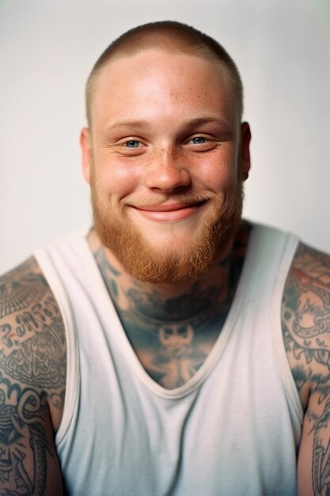

Con este sueño en mente, los amigos decidieron convertirlo en realidad. Se asociaron con expertos en surf, ecologistas y diseñadores para dar vida a SurfVibesCamp. En lugar de simplemente ser un lugar para surfear, querían que fuera una experiencia integral que fusionara la pasión por el surf con un compromiso firme con la sostenibilidad. La construcción del primer campamento comenzó con principios ecológicos en mente. Se utilizaron materiales reciclados y sostenibles, y se implementaron tecnologías verdes para minimizar el impacto ambiental. Además, SurfVibesCamp estableció alianzas con organizaciones locales de conservación marina para participar activamente en proyectos de limpieza de playas y protección de la vida marina. El campamento se convirtió en un espacio donde los surfistas de todas las edades y niveles podían sumergirse en la cultura del surf, aprender nuevas habilidades y conectarse con la naturaleza de manera consciente. Las lecciones de surf no solo se centraban en la técnica, sino también en el respeto por el océano y la importancia de su preservación. Para llevar su mensaje al mundo, SurfVibesCamp utilizó las redes sociales y creó una plataforma en línea donde compartían historias inspiradoras, consejos e información sobre prácticas sostenibles. Organizaron eventos comunitarios, charlas educativas y colaboraron con artistas locales para difundir su mensaje de amor por el surf y la sostenibilidad. Con el tiempo, SurfVibesCamp se convirtió en un referente en la industria del surf sostenible. Inspiró a otras empresas a seguir su ejemplo, y su impacto positivo se extendió más allá de las playas locales. La historia de SurfVibesCamp no solo es la historia de una empresa, sino también la historia de una comunidad comprometida con el surf, la naturaleza y un futuro sostenible.
Historia de {{titulo}}
SurfVibesCamp nació de la pasión compartida por el surf y el deseo de hacer una diferencia positiva en el mundo. En el corazón de esta empresa se encuentran tres amigos, Alex, Sofia y Diego, quienes crecieron juntos en una pequeña ciudad costera. Su amor por el océano y la cultura del surf los unió desde temprana edad. La semilla de la idea de SurfVibesCamp se plantó durante una de sus sesiones de surf al atardecer. Mientras disfrutaban de las olas y el entorno natural, empezaron a soñar con crear un lugar donde la comunidad surfista pudiera conectarse, aprender y crecer juntos, mientras se comprometían con prácticas sostenibles para preservar el océano que tanto amaban.
Nuestro Equipo
El equipo de SurfVibesCamp está formado por individuos apasionados y comprometidos, unidos por su amor compartido por el surf y su dedicación a la preservación del medio ambiente. Cada miembro aporta habilidades únicas que contribuyen al éxito del campamento y a su compromiso con la sostenibilidad.

Experto surfista y instructor, Alex aporta su profundo conocimiento del deporte para
guiar a los estudiantes a través de las lecciones de surf.
Como amante del océano, Alex lidera las iniciativas de
conservación marina. Ha organizado numerosas limpiezas de playas y colabora estrechamente con
organizaciones locales para concientizar sobre la importancia de mantener los océanos limpios.
Sofia es una defensora apasionada de la sostenibilidad con experiencia en desarrollo
sostenible. Coordina las prácticas ecológicas en el campamento, desde la gestión de residuos hasta
la implementación de tecnologías verdes.
Sofia trabaja en estrecha colaboración con proveedores locales
para garantizar que los materiales utilizados en la construcción y operación del campamento sean
respetuosos con el medio ambiente. Además, organiza talleres educativos sobre prácticas sostenibles
para los campistas.


Diego es un experto en crear experiencias comunitarias memorables. Organiza eventos
locales, actividades culturales y colabora con artistas para promover la conexión entre la comunidad
y el campamento.
Diego utiliza los eventos para destacar la importancia de la
conservación. Introduce prácticas sostenibles en las actividades y fomenta la participación activa
de la comunidad en proyectos ecológicos.
Roberto, chef del campamento, es experto en crear deliciosas comidas utilizando
ingredientes locales y sostenibles.
Se asegura de que las prácticas de cocina sean ecológicas, minimizando
los desperdicios y apoyando a proveedores locales que siguen prácticas agrícolas sostenibles.
